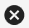

Filtering Members
Naviate Cloud Manager incorporates several tools for filtering and displaying Hub Members and related status. Please note — the filtering described here applies to Hub members only.
The member name filter is the same name filter mechanism incorporated elsewhere in the application. As stated previously, the Member Name Filter is case-insensitive and will retrieve results regardless of where in the Name the specified letters are found.

As expected, as each letter of the filter is entered, the list narrows automatically based on finding a match for the filter anywhere in the name. Pressing the

Clear button resets the filter and refreshes the list. Also, notice the filtered total display that, along with the selected and Hub total amounts, assists in managing Hub member browsing and selecting activities.Hub Member Filtering:
In addition to the member Name filter, there are five other filtering mechanisms available.
The status filter allows the user to filter all Hub members according to Status (All, Active, Pending, Inactive, Not Invited):

With a Status filter selected, only those members having the selected Status appear. The total number of these members found is displayed in the filter total.
Notice that compared with the previous screen, the Name/Email Filter has also been cleared, so as to produce all Pending Members. If it had not been cleared, then only Pending Members corresponding to the filter value 'symetriu' would have been selected. For more on combining filters, see below.
Also, observe the Status icons that appear next to the member selection checkbox.

While each Status icon is based on the first letter of the Status— A=Active, P=Pending, I=Inactive, etc., placing the mouse pointer directly over this icon displays the meaning of the icon (above). Color coding according to the following scheme provides additional help in identifying member Status:
Active = Black
Pending = Green
Inactive = Yellow
Not Invited = Red
Disabled = Gray (project members only)
Please note -- Inactive members can not be selected

Next, Naviate Cloud Manager provides an access level filter.

Next, Naviate Cloud Manager provides an email filter.
The email filter selection list contains an entry for each email address found in the list of Hub members.
As expected, this filter can be used in combination with any of the other filters.

The project member filter list is located to the right of the email filter. This filter is populated with all current projects that the user currently has access to. Once the specific project filter is applied, the user can see which of the hub members are in that specific project. For example, we want to see which HUB users are members of the project "Symetri_US_ACC_Demo" AND that match the "symetriu" name/email filter:
This filter provides an easy way to compare current member project assignments, and to copy all members from one project to another. 
Lastly, the role filter allows a user to filter users by their assigned role: 
Project Member Filtering:
In addition to the member Name filter, there are three other filtering mechanisms available.
Access level filter - filters by the access level the members have

Email Domain filter - filters by the emails of the members in the project:

Role filter - filters by the roles assigned to the members in the project: